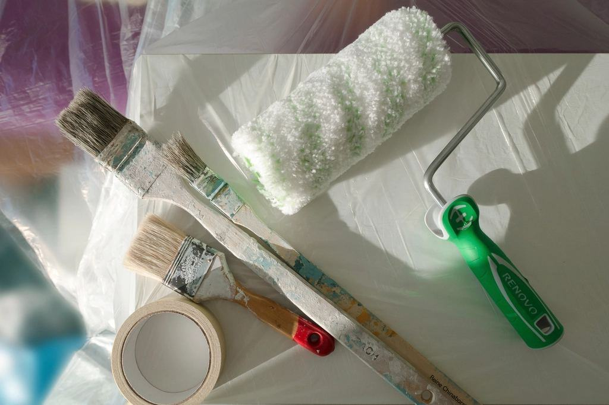

Norrlands snabbast växande fasadentreprenör
Från tre målare i en hyrd lokal på Västerslätt 2011 till 118 anställda i Umeå, Skellefteå, Luleå och Örnsköldsvik. Puts, måleri och fasadrenovering i stor skala.
Vilket skede är ert projekt i?
- Puts på nyproduktionTunnputs och tjockputs på flerbostadshus, skolor och vårdbyggnader som underentreprenör.
- FasadrenoveringUtredning, lagning och omputsning av fasader från 1950- till 1980-talet.
- Måleri i nyproduktionSpackling och målning av hela trapphus och lägenheter enligt AMA Hus.
- IndustrihallarSprutmålning av betongväggar, pelare och tak i produktions- och lagerlokaler.
- VinterputsInklädda och uppvärmda ställningar så att putsen härdar även i januari.
- Brf och förvaltningFasad- och trapphusrenovering i bebodda hus med fast kontaktperson.
- Skicka underlagRitningar och mängdförteckning – kalkyl inom tio arbetsdagar.
- Jobba på KvarkenVi anställer ett tjugotal putsare och målare per år.
”När vi började fick norrländska byggen vänta på fasadfirmor söderifrån. Nu är det vi som har kön – och vi tänker anställa oss ur den.”

Certifierade för stora arbetsplatser
- ISO 9001 och 14001
- Byggföretagen och Måleriföretagen
- Heta arbeten
- Ställning, lift och fallskydd
Fyra kontor, 50 mil kust
Varje kontor har egen platsledning och egna lag, men kalkyl, maskinpark och inköp är gemensamma.

Umeå
Formvägen 22, Västerslätt – huvudkontor och kalkyl
Skellefteå
Industrigatan 9, Solbacken – industri och nyproduktion
Luleå
Kronan, Hangarvägen 4 – Norrbotten
Örnsköldsvik
Bolagsgatan 15 – brf och kommunala uppdrag
Platschefer och förvaltare om samarbetet
Kvarken höll putstakten på Snickaren trots att stommen var tre veckor sen. De satte in ett extra lag utan att fråga om tillägg.
Platschef, Norrbyggen EntreprenadSkellefteåVeckorapporterna med foton gör att jag kan följa fasadrenoveringen från kontoret i Umeå utan att åka ut varje dag.
Lena V., förvaltareUmeåElva veckor för 42 000 kvadratmeter i en hall där produktionen redan hade startat. Inga avvikelser i säkerhetsronderna.
Projektchef, CellfabrikenSkellefteå


Så bemannar vi ett stort projekt
- 1

Kalkyl på tio dagar
Vi räknar på ritningar och mängdförteckning och svarar med pris och resursplan inom tio arbetsdagar.
- 2

Startmöte på plats
Platschef, arbetsledare och lagbas går igenom tidplan, logistik och ställning med beställaren.
- 3

Produktion med veckorapport
Varje fredag får ni en rapport med utförda mängder, avvikelser och foton.
- 4

Egenkontroll och överlämning
Dokumentation enligt AMA Hus och garantitid enligt AB 04 eller ABT 06.